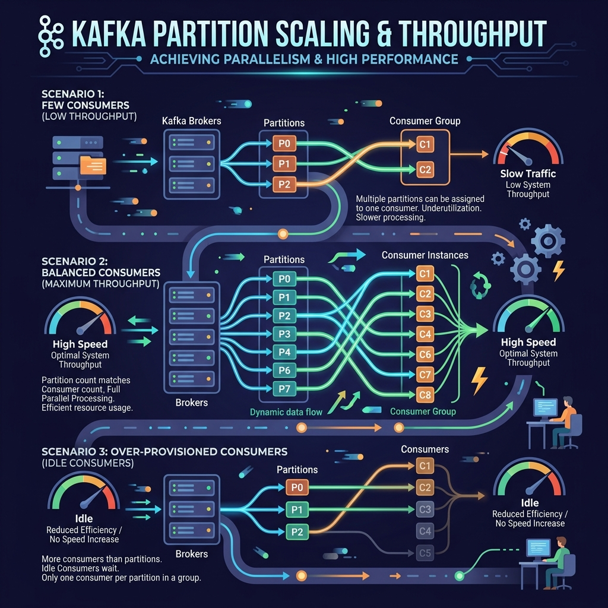

When creating a new topic in Apache Kafka, one of the first questions you must answer is: "How many partitions do we need?" Because partitions determine your topic's maximum parallel processing power, making a mistake here can limit your application's speed or overload your cluster.
Let's look at the trade-offs, sizing formulas, and best practices for selecting the ideal partition count for your Kafka topics.

Imagine building a toll plaza on a highway:
If you build too few toll lanes (too few partitions), cars will back up for miles (consumer lag) because the cashiers can't process them fast enough.
If you build 100 toll lanes (too many partitions) but only have 3 cashier employees working (consumers), 97 lanes will sit empty. Furthermore, building and maintaining 100 lanes requires massive construction and management costs (metadata overhead on brokers).
The Sizing Formula
To choose the correct number of partitions, you should estimate your throughput targets using a simple formula:
Number of Partitions = max(T / P, T / C)
Where:
- T = Target throughput (e.g., messages/sec or MB/sec).
- P = Throughput capacity of a single producer writing to a partition.
- C = Throughput capacity of a single consumer thread reading from a partition.
Example: If your target throughput is 10,000 messages/sec, a single producer can write 5,000 messages/sec, and a single consumer thread can process 1,000 messages/sec. Your partition count calculation is:
- Producer limit: 10,000 / 5,000 = 2 partitions
- Consumer limit: 10,000 / 1,000 = 10 partitions
- Target partitions = max(2, 10) = 10 partitions
The Cost of Too Many Partitions
If partitions boost speed, why not just set 100 partitions for every topic?
- File Handles: Each partition maps to folders and index/data files on disk. More partitions mean more active file descriptors.
- Memory Overhead: Kafka brokers allocate memory tables to track active partitions.
- Controller Work: If a broker fails, the cluster controller must elect new leaders for all partitions on that broker. Having hundreds of thousands of partitions can slow recovery time down from milliseconds to minutes.
General Rules of Thumb
- For small/medium applications, 3 to 6 partitions are usually sufficient and allow room to scale.
- For high-throughput systems, choose a multiple of your consumer count (e.g., 12, 24, 48).
- Never set fewer partitions than your maximum planned active consumer instances in a consumer group, or some consumers will remain idle.
Conclusion
Picking partition counts requires planning. Balance your immediate scaling requirements against the metadata load on your Kafka cluster. When in doubt, start with a reasonable scale (like 6 partitions) and monitor consumer performance metrics to decide if you need to scale up later.